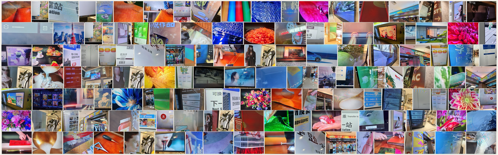
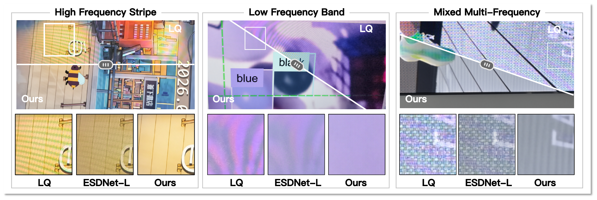
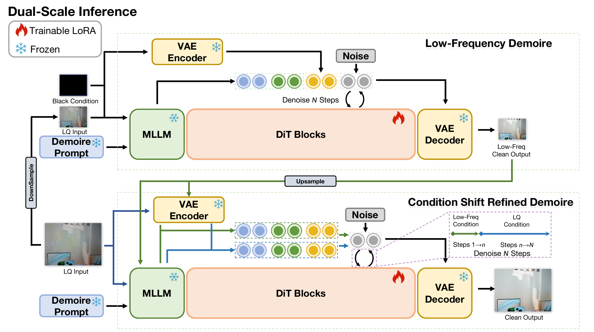

DemoiréEdit
Dual-Scale Condition-Shift Editing
for Robust Real-World Image Demoiréing
* Corresponding authors.
DailyMoiré130
The paper introduces 130 smartphone photographs of everyday displays, including signage, monitors and laptops. The collection targets difficult real-world moiré across different display–camera combinations.

Evaluation combines detector-based residual moiré measurements, no-reference perceptual metrics and blind human judgments. In the reported Best-of-7 study with 31 participants, the method receives 71.3% overall-quality preference (participant-clustered 95% confidence interval: 65.1–76.9%). This is a preference rate among the compared methods, not a task success rate.
The public release contains 130 original-resolution images with a checksum manifest. Local blur is applied in 18 images; the other 112 retain their scene pixels. Consult the dataset card for processing details and terms. Historical paper scores were not rerun on this public derivative.
Summary
Screen photographs often contain both broad color bands and fine interference patterns. DemoiréEdit approaches their removal as a content-preserving image-editing task: adapt a pretrained editing prior for restoration, correct the scene globally, then recover detail at the original resolution.
The key is to change the image condition during refinement. Early steps use a globally restored view for structure and color; later steps return to the original capture for texture and fine detail.

Why is real-world moiré difficult?
Moiré changes with the display, camera, viewing angle and scene content. A capture can contain high-frequency stripes in one region and low-frequency color distortion in another. Removing visible interference while retaining text, texture and color therefore requires both global context and local detail.
A pretrained image editor offers a broad natural-image prior, but its generative objective alone does not ensure a faithful restoration. We address this through endpoint-supervised training and dual-scale condition-shift inference.
Method
We adapt the editor with trainable LoRA parameters and use the same restoration model at two image scales. The method first establishes a global restoration reference, then changes the conditioning signal during full-resolution denoising.

1. Train for the restored endpoint
Velocity matching teaches the editor how to move along a denoising trajectory. To also supervise what the final restored image looks like, we unroll a short trajectory, decode its endpoint, and compare it with the clean target.
The manuscript objective combines velocity supervision with three complementary restoration losses: L1 for pixel fidelity, LPIPS for perceptual similarity, and focal frequency loss for frequency-domain differences.
The maintained code also includes a latent-MSE extension. The recipe and checkpoint notes distinguish this extension from the manuscript objective and record the released adapter’s provenance.
2. Restore a global view first
Stage 1 resizes the capture to a short side of 1024 pixels. The reduced-resolution image is paired with a black auxiliary reference and processed for 10 denoising steps.
This first pass focuses on global structure and low-frequency appearance. The black reference is intended to discourage copying corrupted color from the capture. The resulting restoration provides guidance for the next stage; it is not simply resized and returned as the final output.
3. Shift the condition to recover detail
Stage 2 starts a new denoising trajectory from noise at the original resolution. For the early, high-noise steps, the upsampled Stage 1 restoration supplies structure and color guidance. For the later steps, the condition switches to the original photograph to recover fine detail.
With N = 10 steps and switching ratio r = 0.3, the first 3 steps use the Stage 1 condition and the remaining 7 steps use the original input.
Stage 2: from high noise to low noise10 steps · r = 0.3
Step 3 / 10 — global guidanceThe image condition is the upsampled Stage 1 restoration, supplying global structure and color guidance.
This diagram explains the conditioning schedule; it does not display intermediate model predictions.
Representative results
The following screen photographs illustrate the combination of color banding, fine stripes and mixed-frequency interference encountered in everyday captures.
Drag directly on each image to compare the input with our result. Use the arrow keys when focused.


Qualitative examples from Figure 8 of the paper.
Try DemoiréEdit
The repository includes the two-stage inference pipeline, a local interactive demo, paired-data training, pinned base-model downloads and a checksum-verified adapter download.
BibTeX
@misc{zhou2026dualscale,
title = {Dual-Scale Condition-Shift Editing for Robust Real-World Image Demoiréing},
author = {Shiyang Zhou and Haijin Zeng and Congpei Qiu and Zhengcen Li and Ping Chen and Xiangming Wang and Zheng Li and Yongyong Chen and Jingyong Su},
year = {2026},
note = {Manuscript},
url = {https://clausy9.github.io/DemoireEdit/}
}